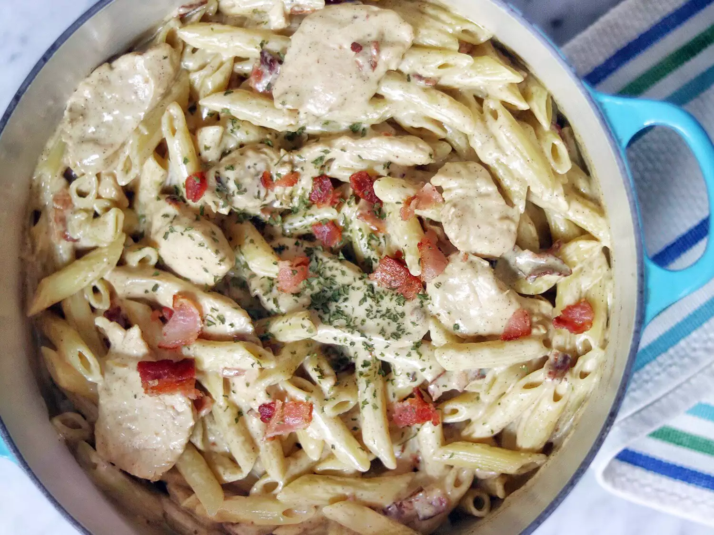

Home
Recettes : Poulet carbonara aux quatre fromages

J'ai préparé ce plat de poulet carbonara lorsque j'ai voulu créer une sauce pour pâtes
gourmande avec du bacon et du poulet coupés en morceaux épais.
Il se trouve que j'avais aussi du fromage et de la crème sous la main.
J'ai eu des amis qui ont essayé ça et ils ont adoré. J'espère que vous aussi !
ingrédients
- 1 paquet (16 onces) de bacon coupé épais
- 1 paquet (16 onces) de pâtes penne
- ⅓ tasse d'huile d'olive
- ¼ tasse de beurre
- 3 cuillères à soupe d'ail émincé
Étapes
- Rassemblez tous les ingrédients.
- Placer le bacon dans une grande poêle et cuire à feu moyen-vif, en le retournant de temps en temps
- Égouttez les tranches de bacon sur du papier absorbant.
- Portez à ébullition une grande casserole d'eau légèrement salée
- endant que les pâtes cuisent